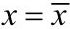
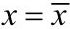
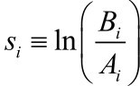
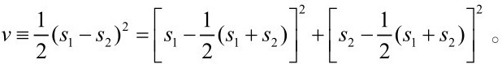

附录
吉芬物品与多重均衡
只要修过经济学原理课，你一定听说过奢侈品和必需品这对概念。奢侈品是那些需求收入弹性大于1的商品。你年收入10万时，一年花2 000元旅游；你年收入20万时，一年花1万元旅游。旅游需求的增长率比收入的增长率高，旅游就是奢侈品。而必需品是需求收入弹性在0到1之间的商品。你年收入10万时，吃大米花2 000元；年收入20万时，吃大米花2 200元。大米需求的增长率赶不上收入的增长率，大米就是必需品。一般来说，效用品包含了更多的奢侈品，需求收入弹性要高于生存品。所以，当效用品技术发生进步，人均收入提高时，效用品的需求也会随之提高，无差异曲线会变得更加平坦，而这又会进一步提高均衡人均收入。
一旦考虑效用品和生存品不同的需求收入弹性，可能出现一个有趣的结果。在传统马尔萨斯模型中，如果地震、海啸这样的灾害摧毁了大量的生产资料，人口会随之减少，人均收入最终仍会恢复到灾害前的水平。但是，在两部门模型下，如果生存品既不是奢侈品，也不是必需品，而是劣等品——需求收入弹性小于0（收入越高，需求越少，比如土豆和番薯），那么图16.1（a）那样的情况有可能会发生：生产资料被毁，生产可能性边界萎缩后，陷入绝境的人们为了活命，放弃奢侈淫逸的生活，转而勒紧腰带，节衣缩食，渡过难关。这种艰苦朴素的作风使他们避免了人口的下降，经济从E点移动到E’点，落到了人口平衡线的右侧而不是左侧，人口不减反增。短期内这似乎是人定胜天的伟大胜利，但最终，长期均衡锁入了更低的E”点而无法回到最初的E点。从事经济学研究的读者也许猜得出来，这背后有一个多重均衡。在多重均衡下，用节衣缩食应对危机，反而会使经济陷入长期贫困陷阱。这个结论听起来和凯恩斯主义有相似之处，但机制是不同的。可以证明，只有在生存品是吉芬物品（一种极端而罕见的“劣等品”）时，多重均衡才可能出现（证明略需技巧，如果你对多重均衡的分析感兴趣，可以阅读下一节）。
图16.1 多重均衡
按理说，即使出现多重均衡，一个经济真要从一个均衡跳跃到另一个均衡，也依赖许多巧合，在现实世界中应该颇为罕见。不过，19世纪的爱尔兰可能经历过从低均衡向高均衡的跳跃。爱尔兰的人口在大饥荒后损失近半，但是饥荒过后，人口并没有恢复增长，而是持续下降，直到100年后（20世纪后半叶）才走出谷底。这很可能是因为土豆是一种吉芬物品，人们一旦摆脱了以土豆为主的饮食方式，就跳入了高均衡，再加上工业革命四处开花，爱尔兰终于摆脱了产出结构生存品化的梦魇。巧合的是，经济学期刊《政治经济学杂志》（Journal of Political Economy）上还真有一篇论文说土豆在19世纪上半叶的爱尔兰是一种吉芬物品（Davies, 1994）。如果这个说法成立，爱尔兰的确有可能在大饥荒后经历了多重均衡间的跳跃。果真如此，这应该是吉芬物品这个概念第一次超越理论趣味，在现实世界中的重大影响被发现[1]。
产出结构定理和效用品免费定理的几何证明
本书第2章的图示模型似乎暗示：保持其他条件不变，只要一个经济的产出结构（或社会文化）更加倾向于效用品，这个经济的均衡人均福利就会更高。可惜，这一命题并不成立（本书正文也已指出了这一点）。例外是存在的，但所有的例外都是多重均衡造成的。所以，只要我们绕开多重均衡，就能获得类似于上述理想命题的定理：
产出结构定理：（a）对一个处于稳定均衡中的经济，一个正向的效用品（生存品）技术冲击总会提高（降低）均衡人均福利。（b）只要生存品不是吉芬物品，那么保持其他条件相当，一个产出结构更加效用品化（生存品化）的经济肯定拥有更高（更低）的均衡人均福利。
效用品免费定理：（a）对一个处于稳定均衡中的经济，一个正向的效用品（生存品）文化冲击总会提高（降低）均衡人均福利。（b）只要生存品不是吉芬物品，那么保持其他条件相当，一个社会文化更加效用品化（生存品化）的经济肯定拥有更高（更低）的均衡人均福利。
这两个定理，一个有关产出结构，一个有关社会文化。两个定理下，各有两个命题。前一个命题（a）用于对技术（或文化）冲击的分析，后一个命题（b）用于不同社会间的比较。所有的命题都为排除多重均衡而附加了条件。（a）组命题所附加的条件是“正向技术（或文化）冲击”。（b）组命题所附加的条件是“生存品不是吉芬物品”。这两个条件都不算太严厉，所以定理有着不错的适用性。
下面进入定理的证明环节。我先陈述定理所需的6条假设。其中假设1是至关重要的群己矛盾假设，保障两部门的存在。假设2—6则是为了能把模型画成我们所熟悉的图形。
假设：
1．利益冲突假设：效用函数U（E）不是人口增长率函数n（E）的一个变换。
2．同质性假设：人们拥有相同的偏好。
3．严格单调性假设：效用函数U（E）和人口增长率函数n（E）对消费E严格单增。
4．禀赋经济假设：假设一个禀赋经济，劳动力不是生产要素。当人口为H时，个体的消费选择集是总体生产可能性集合的1/H。（只要保证生产可能性边界随人口等比例缩放，这个假设可以放松。）
5．偏好保序性假设：如果一件商品在某个消费点E上相对于另一件商品是效用品，那么前者在任何消费点上相对后者都是效用品。
6．凹性和连续性假设：效用函数连续、严格凹、连续可微。生产可能性边界连续、严格凹，生产函数连续可微。
证明：
采用本书第2章两部门马尔萨斯模型的设定：一个孤立经济，由一条人口平衡线、一簇无差异曲线和一簇人均生产可能性边界所描述。
如图16.2所示，从坐标系的原点向第一象限任意画一道射线，记此射线与横轴的夹角为。射线与人口平衡线的交点由k决定，记为E（k）。
因为偏好是完备的，所以必定存在唯一的一条无差异曲线穿过E（k）点。记此无差异曲线在E（k）点的斜率的绝对值为u（k）。
同样的，必定存在唯一的一条生产可能性边界穿过E（k）点。记此生产可能性边界在E（k）点的斜率的绝对值为p（k）。因为生产可能性边界连续且严格凹，所以p（k）的导数p′（k）＜0——夹角越大p（k）越小。
把u（k）和p（k）函数画在同一个坐标系内，如图16.3（a）。当且仅当u（k）=p（k）时，经济达到均衡。因为,要保证均衡的存在性，只要u（k）连续即可。沿着递减的p（k）曲线，可能出现多重均衡。易知，u（k）从下穿越p（k）的交点是稳定均衡，u（k）从上穿越p（k）的交点是不稳定均衡。图16.3（b）就画了一个不稳定均衡E（k1），当k2略大于k1时，u（k2）居然比p（k2）还要小，显然当经济处于E（k2）时，人口还得继续萎缩，人均生产可能性边界还得继续向外扩张才能恢复均衡。因此E（k1）是一个不稳定均衡。
图16.2 斜率函数u（k）和p（k）
如果u（k）/p（k）图中只有一个（稳定）均衡，无论是产出结构定理还是效用品免费定理，无论是定理的（a）形式还是（b）形式，显然都是成立的。当产出结构变得更加效用品化时，生产可能性边界变得更加陡峭，对每一个k值，p（k）都增加了，p（k）曲线向上移动。如图16.4（a）所示，新的均衡k1一定比旧均衡k0大，对应的人均福利也更高。与此相似，当社会文化变得更加效用品化，无差异曲线变得更加扁平，u（k）曲线向下移动。如图16.4（b）所示，新的均衡k1也一定比旧均衡k0大，对应的人均福利更高。
图16.3 不稳定均衡
图16.4 定理的证明
但是，当存在多重均衡时，有可能会出现图16.5中的情形，新均衡反而比旧均衡小。所以，我们需要理论上的“山后小路”来包抄解决这个关卡。这样的“小路”有两条。
第一条“小路”，把定理的使用场景限制在技术进步的情形中。要让一个更加效用品化的产出结构反而对应一个更低的均衡，p（k）的上移必须伴随着产出的极度萎缩[2]。如果我们只看技术进步，不看技术衰退，我们就能剔除这种反常情形（爱尔兰土豆危机是一次负向的技术冲击，所以不能剔除作为反例的可能）。于是，我们就有了（a）形式的产出结构定理：只要经济从稳定均衡出发，一个正向的效用品（生存品）技术冲击必然增加（降低）均衡人均福利。
第二条“小路”，利用更严格的条件杜绝多重均衡的可能性。u（k）函数一般来说应该是向上倾斜的，如果它向上倾斜，那么只会与p（k）相交一次，产生一个稳定均衡。多重均衡的前提是u（k）函数向下倾斜。又可证明，如果u（k）函数向下倾斜，那么生存品是一个吉芬物品。所以，只要生存品不是吉芬物品，u（k）就不会向下倾斜，也就不会与p（k）相交多次产生多重均衡。没有多重均衡，如前所述，则定理成立。
效用品免费定理的证明与此相似。证毕。
图16.5 多重均衡造成的麻烦
代数版的两部门模型
本节将用一个简单的代数模型来呈现一个孤立的两部门经济的三种比较静态结果。代表性经济人选择其生存品消费x和效用品消费y，以最大化一个Cobb-Douglas效用函数：
maxU（x,y）=1−βyβx
此函数规模报酬不变的特性（constant returns to scale）赋予效用数值以具体的含义：当两类消费双双倍增时，效用值也将增加相同的倍数。
设生存品生产函数为 ，效用品生产函数为。LA和LB是生产生存品A和效用品B各自使用的土地，其总和为L，即LA+LB=L。HA和HB是生产生存品A和效用品B各自使用的劳动力（人口），其总和为H，即HA+HB=H。A和B分别是两个部门各自的技术水平。
，效用品生产函数为。LA和LB是生产生存品A和效用品B各自使用的土地，其总和为L，即LA+LB=L。HA和HB是生产生存品A和效用品B各自使用的劳动力（人口），其总和为H，即HA+HB=H。A和B分别是两个部门各自的技术水平。
假设一
凭借γA=γB的假设，人口增长和萎缩将对两个部门产生等比例的影响[3]。在正文的图示模型里，这对应生产可能性边界在人口变动时的形状不变的缩放。因为劳动报酬递减，γA、γB都小于1。
求解土地和劳动约束下的效用最大化问题，可以得到：
把这两个式子代入
已知其中，因此：

此经济通过人口的调整趋于均衡。在此孤立经济中，人口的净增长率gH等于人口自然增长率n。假设人口自然增长率仅取决于人均生存品消费。
假设二 ，且
 是使人口保持不变的人均生存品消费水平，对应一条垂直的人口平衡线在x轴上的截距。在静态均衡中，。因此：
是使人口保持不变的人均生存品消费水平，对应一条垂直的人口平衡线在x轴上的截距。在静态均衡中，。因此：
结论一
均衡人均效用随着产出结构效用品化程度（）、对效用品的相对偏好（）和维持人口平衡所需的人均生存品消费（）的增长而增长。
结论一恰好对应图示模型所揭示的3个比较静态结果。
在这个孤立经济中，假设生存品技术A以gA速度增长，效用品技术B以gB速度增长，人均福利U的增长速度g将是多少呢？欲解此题，先证明以下引理：
引理二  趋于0
趋于0
证明：
已知人口的变动服从，而将土地供给标准化为1后：
代入gH的表达式，得到：
用M指代ln A+（γ−1）lnH，那么：
M的运动服从：
由于（γ−1）δ＜0，M将稳定于M*：
而dM=gA+（γ−1）gH将趋向于0。证毕。
定理三 趋向于
证明：
首先，需要将U表达为A和B的函数。因为动态均衡将略微偏离静态均衡，所以我们需要从下式开始推导：
将上式两边进行对数线性化，得到：
gU=β（gB−gA）+gA−（1−γ）gH
由引理二知gA−（1−γ）gH趋向于0，因此，gU趋向于β（gB−gA）。证毕。
人口漏斗模型
假设有无数个村庄（一片村庄的海洋），所有村庄初始时都有相同的技术水平和人口水平，且人口数量恰处于平衡状态。随着时间的流逝，所有村庄的生存品技术和效用品技术都停滞于A′和B′，只有一个村庄——钻石村例外。在钻石村里，生存品技术A*和其他村庄一样都始终停滞于A′，但是它的效用品技术B*倾向于以速度g增长。当B*＞B′时，钻石村就会吸引移民。
假设三 村庄间不存在贸易，但是移民无成本
零摩擦的移民意味着在动态均衡中村庄之间不存在效用品水平的差异。由于周围是一片村庄的海洋，移民对周围任何一个村庄的影响可以忽略不计，因此均衡情况下，U*=U′。由前述两部门模型已经得到，所以在零摩擦的动态移民均衡下：
上式中x*、x′分别是钻石村和其他村庄的人均生存品消费量。上式整理并对数化后可得：
定义钻石村的移民率m。在均衡时，钻石村人口平衡，移民恰好填补人口的自然减损：
m+n=0
因此，。其他村庄在均衡时。定义效用品相对生产率。我们得到移民与产出结构的关系：
定理四 
移民率正比于地区间效用品相对生产率之差。产出结构倾向于效用品的地区将吸引移民。
移民传播技术。假设移民通过等比例替换人口的方式来替换移民吸收地区的技术水平：
假设四 从时间t到，钻石村的效用品技术以如下方式更新：
对上式左右两边各除以A′后做对数化，并求∆t→0时的极限，我们可以得到：
s*=g−δβ（s*−s′）2
这个微分方程有一个稳定的均衡：
定理五 在长期，即使钻石村的效用品技术B*具有以速度g增长的潜力，但是钻石村的效用品相对生产率仍将稳定于
增长潜力g对稳定点只有水平效应，没有增长效应。
技术竞择的双城模型
人口漏斗模型是一个局部均衡模型，抹除了钻石村在吸纳移民时对其他村庄的影响。本节，我们要考察一个两地区模型，以包括漏斗模型所忽略的一般均衡效应。
假设存在两个地区，村庄1和村庄2。它们的生存品技术A1和A2始终相等，并以相同的速度gA增长（这一点确保了两个地区始终保持相等的人口，在核心结论不失一般性的前提下使模型可解）。它们的效用品技术B1和B2按照下式随机漂移：
d ln Bi=（gA+g）dt+σdzi
此式中g＞0刻画了两个地区内部效用品技术相对于生存品技术的天然增长优势。扰动项zi（i=1,2）是布朗运动项，z1和z2彼此独立，且Var（σdzi）=σ2dt,∀i=1,2。这两个布朗运动项是地区间差异的来源，由此产生了人口漏斗式的移民。仍然定义，则上式可写作：
dsi=gdt+σdzi
这是效用品相对生产率s的“天然”变化，尚未考虑地区间移民带来的技术替代。而这种天然变化由于g＞0显然趋于无限增长。但是，移民产生的技术竞择会“拖累”s的增长。只要s1≠s2，竞择就发生作用。由上节人口漏斗模型相似的计算可以得到竞择效果的表达式，从而使si真正的变化率变成：
是指示函数，当si＞sj时，它等于1，否则等于0。如果s1＞s2，村庄1的效用品相对丰富，会吸引村庄2的人口移民进来，从而把村庄1的效用品相对生产率s1“拖”向接近s2的水平。如果s1＜s2，村庄1的生存品相对丰富，只会有人从村庄1移民到村庄2，村庄1的技术不会受到移民的影响。
因为我们忽略社会文化（β）的差异和变化，效用品水平完全取决于效用品相对生产率s。所以要考察这两个地区构成的整体世界的效用品变化，只要关注s1和s2的均值和方差即可[4]。
根据伊藤引理，得到：
其中z是布朗运动项。
对dµ的表达式两边取长期的期望，得到：
定义。S就是竞择效应。（g−S）的正负就是增长效应和竞择效应间比拼的结果。如果g＞S，增长压倒竞择；反之，竞择压倒增长。现在关键的问题是，到底多大？下面我们就要求解
定义λ≡βδ，称之为“竞择系数”。仍然使用伊藤引理，得到：

因为，所以对上述等式右边取长期期望后，它也应该等于0：
令 ，上式可以写成一则通项公式：
，上式可以写成一则通项公式：
且此通项公式满足
这个通项公式的通解：
令x=1，
定义，那么f（1）可以写成 所以：
所以：
将之代入，得到：
由此，我们解得竞择压倒增长的边界条件：
定理六 在双城模型中，竞择压倒增长，当且仅当，否则，增长压倒竞择。
[1]对吉芬物品旧有的实证都局限于验证一种产品是不是吉芬物品，完全把吉芬物品本身当作一种现象看待。而在两部门多重均衡的案例中，吉芬物品将少有地作为一种前提出现，导致其他影响深远的社会现象。
[2]生产可能性边界的形状变化表现为p（k）曲线本身的移动，生产可能性边界大小的变化则表现为经济沿着p（k）曲线移动。
[3]我与三位合作者合写的一篇论文曾解得这一假设放松后的一般解（Dutta et al., 2018）。
[4]v是样本方差：